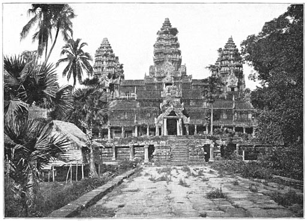

Angkor Wat
Angkor Wat is a temple complex in Cambodia and the largest religious monument in the world. It was originally constructed as a Hindu temple dedicated to the god Vishnu for the Khmer Empire, gradually transforming into a Buddhist temple towards the end of the 12th century. It was built by the Khmer King Suryavarman II in the early 12th century in Yaśodharapura, the capital of the Khmer Empire, as his state temple and eventual mausoleum. Breaking from the Shaiva tradition of previous kings, Angkor Wat was instead dedicated to Vishnu. As the best-preserved temple at the site, it is the only one to have remained a significant religious center since its foundation. The temple is at the top of the high classical style of Khmer architecture. It has become a symbol of Cambodia, appearing on its national flag, and it is the country's prime attraction for visitors.
Gallery
